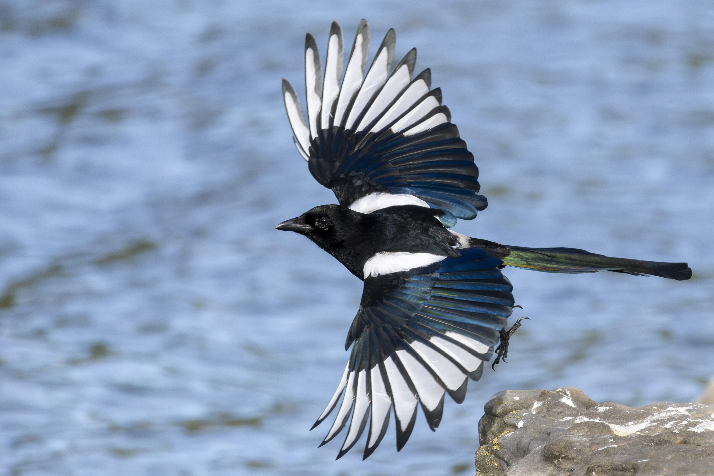
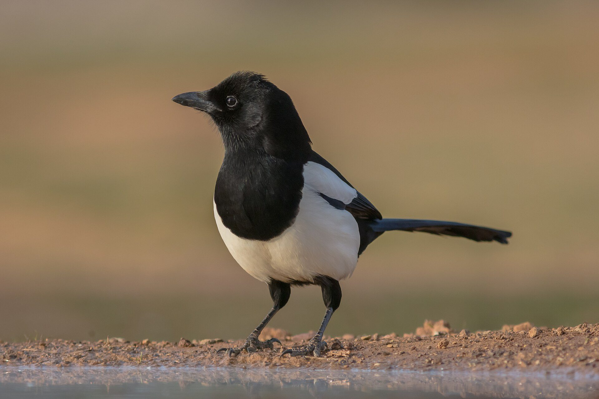
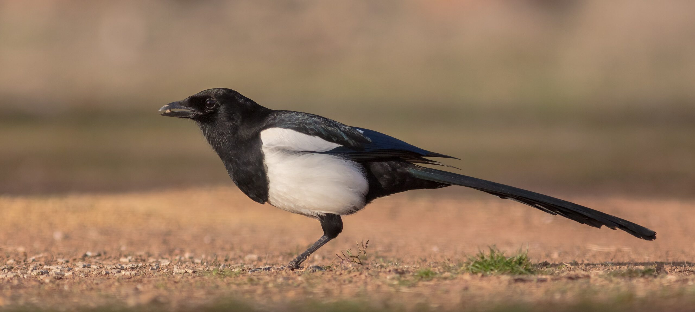
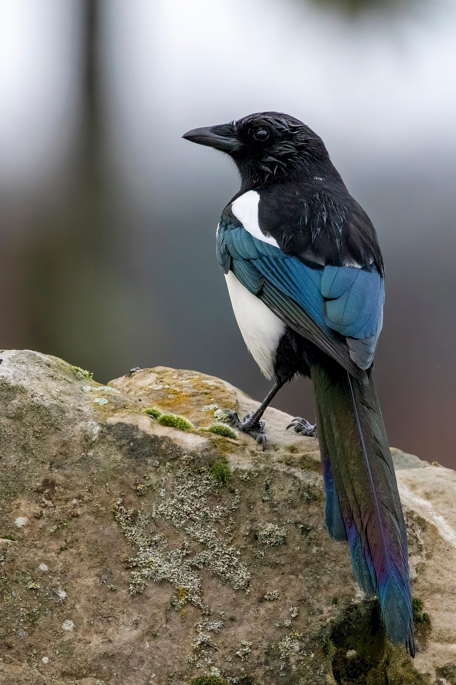

Named for the bird that never leaves.
Magpie is where local businesses book local creators. It is named after a bird that does what word of mouth has always done: it stays in one place, it speaks up, and it brings the good things home.
The neighborhood got left out of the creator economy.
The places that make a neighborhood worth living in run on word of mouth. They always have. The cafe everyone swears by, the barber with the three-week wait, the bakery with the line out the door: none of them bought that reputation. Neighbors built it, one recommendation at a time.
Then marketing moved online, and the tools got built for somebody else. The creator economy runs on big brands with big budgets and national followings. A local business cannot use a million followers scattered across the country. What it needs is the people its own neighbors already listen to.
Those people are already in every neighborhood, posting about where they eat, shop, train, and go out, to followers who actually live there. Magpie connects the two sides: a business books a local creator for a comped visit or at the creator's own rate, the post goes up, and the visit is counted when a follower walks in. Local creators, local businesses, one neighborhood at a time.


The bird is the whole idea.
We did not pick the magpie for the logo. We picked it because everything the platform does, the bird already does.

Social and vocal
Magpies live in groups and talk constantly. When one finds something worth knowing, the whole neighborhood hears about it. That is word of mouth, exactly: news that travels because somebody local could not keep it to themselves.
Gathers the bright things
A magpie notices what shines. It gathers the bright, shiny things in its neighborhood and brings them home. Magpie does the same work for a place: it finds the businesses worth knowing, and brings people to them.
Stays in the same place for life
Magpies do not migrate. A magpie learns one patch of ground and stays there its whole life. Local for life is not a slogan we wrote. It is how the bird actually lives, and it is how neighborhoods actually work.
Founded by Jeff Rimmer, who has spent 2 decades in local media and startups, and most recently led marketing for large brands and Fortune 100 companies, including influencer marketing at scale.
Magpie sits at the intersection of all of it: the local media years, the startups, and the influencer work, pointed at one problem. The neighborhood business that modern marketing forgot.
Your city is forming its founding roster.
Forty-five founding markets in 13 countries are forming now, and any city can be next. Sign up, name your city, and you are on its founding list.